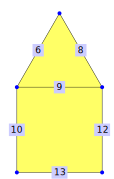
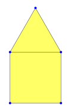
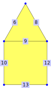
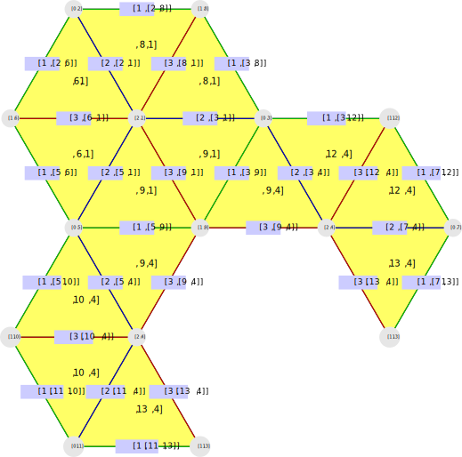
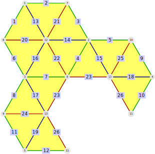

This chapter is concerned with the flags of a polygonal complex. A flag is a triple (V,E,F) of vertex V, an edge E, and a face F that are incident to each other. They can be computed with the command Flags (21.1-1). The chambers (5.2) for a polygonal complex are equivalent to the flags of the polygonal complex
The elementary flag access functions are described in section 21.1.
Section 21.2 uses the knowledge of the flags to compute the DressGroup (21.2-1) of a polygonal complex without edge ramifications.
In Section 21.3 defines a triangular complex whose faces are given by the flags and describes some special functionality for these kinds of complexes.
This section deals with all different types of flags. In general, a flag is a tuple consisting of incident elements of different dimensions, for example a vertex-edge-pair, a vertex-face-pair or a vertex-edge-face-triple.
For example, consider the following polygonal surface:
gap> complex := PolygonalComplexByDownwardIncidence( > [ , , , , , [2,5], , [2,3], [3,5], [11,5], , [3,7], [7,11] ], > [[6,8,9], , , [9,10,12,13]]);;
Most apparent are the flags that consist of a vertex, an edge, and a face, called 3-flags or flags for short.
gap> ThreeFlags(complex); [ [ 2, 6, 1 ], [ 2, 8, 1 ], [ 3, 8, 1 ], [ 3, 9, 1 ], [ 3, 9, 4 ], [ 3, 12, 4 ], [ 5, 6, 1 ], [ 5, 9, 1 ], [ 5, 9, 4 ], [ 5, 10, 4 ], [ 7, 12, 4 ], [ 7, 13, 4 ], [ 11, 10, 4 ], [ 11, 13, 4 ]] gap> Flags(complex) = last; true
It is also possible to compute flags of length 2, for example the vertex-face-flags:
gap> VertexFaceFlags(complex); [ [ 2, 1 ], [ 3, 1 ], [ 3, 4 ], [ 5, 1 ], [ 5, 4 ], [ 7, 4 ], [ 11, 4 ] ]
Sometimes it is necessary to have a standardized set of all flags that consist of two elements. For that reason the command TwoFlags (21.1-5) exists.
Since flags of length 1 are just vertices, edges, and faces, the usual access functions of Section 3.1 are sufficient most of the time. If they are needed in a combined format, the command OneFlags (21.1-6) is available.
‣ Flags( complex ) | ( attribute ) |
‣ ThreeFlags( complex ) | ( attribute ) |
Returns: a set of flags
Return the set of all flags of complex. Every flag is a triple [vertex,edge,face] of a vertex, an edge and a face of complex that are all incident to each other.
As an example consider the polygonal surface from the start of section 21.1.
gap> Flags(complex); [ [ 2, 6, 1 ], [ 2, 8, 1 ], [ 3, 8, 1 ], [ 3, 9, 1 ], [ 3, 9, 4 ], [ 3, 12, 4 ], [ 5, 6, 1 ], [ 5, 9, 1 ], [ 5, 9, 4 ], [ 5, 10, 4 ], [ 7, 12, 4 ], [ 7, 13, 4 ], [ 11, 10, 4 ], [ 11, 13, 4 ]] gap> Flags(complex) = ThreeFlags(complex); true
‣ VertexEdgeFlags( complex ) | ( attribute ) |
Returns: a set of vertex-edge-flags
Return the set of all vertex-edge-flags of complex. Such a flag is a tuple [vertex, edge] of a vertex and an edge of complex that are incident.
As an example consider the polygonal surface from the start of section 21.1.

gap> VertexEdgeFlags(complex); [ [ 2, 6 ], [ 2, 8 ], [ 3, 8 ], [ 3, 9 ], [ 3, 12 ], [ 5, 6 ], [ 5, 9 ], [ 5, 10 ], [ 7, 12 ], [ 7, 13 ], [ 11, 10 ], [ 11, 13 ] ]
‣ VertexFaceFlags( complex ) | ( attribute ) |
Returns: a set of vertex-face-flags
Return the set of all vertex-face-flags of complex. Such a flag is a tuple [vertex, face] of a vertex and a face of complex that are incident.
As an example consider the polygonal surface from the start of section 21.1.

gap> VertexFaceFlags(complex); [ [ 2, 1 ], [ 3, 1 ], [ 3, 4 ], [ 5, 1 ], [ 5, 4 ], [ 7, 4 ], [ 11, 4 ] ]
‣ EdgeFaceFlags( complex ) | ( attribute ) |
Returns: a set of edge-face-flags
Return the set of all edge-face-flags of complex. Such a flag is a tuple [edge, face] of an edge and a face of complex that are incident.
As an example consider the polygonal surface from the start of section 21.1.

gap> EdgeFaceFlags(complex); [ [ 6, 1 ], [ 8, 1 ], [ 9, 1 ], [ 9, 4 ], [ 10, 4 ], [ 12, 4 ], [ 13, 4 ] ]
‣ TwoFlags( complex ) | ( attribute ) |
Returns: a set of wrapped two-flags
Return a set of all flags of length 2, i.e. all pairs of vertices, edges and faces that are incident to each other. Since the labels of vertices edges and faces might overlap, special care has to be taken to make sure that every entry of the returned set corresponds to exactly one flag of length 2.
If it is not necessary to have all of the different flags in one set, one should use the methods VertexEdgeFlags (21.1-2), VertexFaceFlags (21.1-3) and EdgeFaceFlags (21.1-4) instead.
To make the flags of different types disjoint in the result, every flag is wrapped into a pair containing an index and the flag:
The vertex-edge-flag [vertex,edge] is wrapped into [ 1, [vertex, edge] ].
The vertex-face-flag [vertex,face] is wrapped into [ 2, [vertex, face] ].
The edge-face-flag [edge,face] is wrapped into [ 3, [edge, face] ].
As an example consider the polygonal surface from the start of section 21.1.
gap> TwoFlags(complex); [ [ 1, [ 2, 6 ] ], [ 1, [ 2, 8 ] ], [ 1, [ 3, 8 ] ], [ 1, [ 3, 9 ] ], [ 1, [ 3, 12 ] ], [ 1, [ 5, 6 ] ], [ 1, [ 5, 9 ] ], [ 1, [ 5, 10 ] ], [ 1, [ 7, 12 ] ], [ 1, [ 7, 13 ] ], [ 1, [ 11, 10 ] ], [ 1, [ 11, 13 ] ], [ 2, [ 2, 1 ] ], [ 2, [ 3, 1 ] ], [ 2, [ 3, 4 ] ], [ 2, [ 5, 1 ] ], [ 2, [ 5, 4 ] ], [ 2, [ 7, 4 ] ], [ 2, [ 11, 4 ] ], [ 3, [ 6, 1 ] ], [ 3, [ 8, 1 ] ], [ 3, [ 9, 1 ] ], [ 3, [ 9, 4 ] ], [ 3, [ 10, 4 ] ], [ 3, [ 12, 4 ] ], [ 3, [ 13, 4 ] ] ]
‣ OneFlags( complex ) | ( attribute ) |
Returns: a set of wrapped one-flags
Return a set of all flags of length 1, i.e. all vertices, edges and faces. Since the labels of vertices edges and faces might overlap, special care has to be taken to make sure that every entry of the returned set corresponds to exactly one of them.
For that reason vertices, edges and faces are wrapped into a list:
The vertex v is wrapped into [ 0, v ].
The edge e is wrapped into [ 1, e ].
The face f is wrapped into [ 2, f ].
As an example consider the polygonal surface from the start of section 21.1.
gap> OneFlags(complex); [ [ 0, 2 ], [ 0, 3 ], [ 0, 5 ], [ 0, 7 ], [ 0, 11 ], [ 1, 6 ], [ 1, 8 ], [ 1, 9 ], [ 1, 10 ], [ 1, 12 ], [ 1, 13 ], [ 2, 1 ], [ 2, 4 ] ]
While flags can be defined for any polygonal complex (as was done in section 21.1), they have additional structure for polygonal complexes without edge ramifications.
For every flag [v,e,f] there is exactly one other vertex X such that [X,e,f] is also a flag.
For every flag [v,e,f] there is exactly one other edge X such that [v,X,f] is also a flag.
For every flag [v,e,f] there is at most one other face X such that [v,e,X] is also a flag.
Each of these observations divides the flags into partitions of at most two elements. Therefore it possible to define involutions that swap these elements. They are called Dress involutions.
To represent them in GAP the flags have to be encoded as positive integers. The set of flags from Flags (21.1-1) serves this purpose: Every flag is identified with its position in this set.
‣ DressInvolutions( complex ) | ( attribute ) |
‣ DressGroup( complex ) | ( attribute ) |
Returns: a list of three involutions
Return the three Dress involutions of complex as a list or as the generators of a group. The Dress involutions act on the set of flags of complex.
The flags of complex are identified with their position in the set Flags(complex). Assuming this identification the Dress involutions are defined as follows:
The first Dress involution maps the flag [v,e,f] to the flag [X,e,f] where X is the unique vertex different from v such that [X,e,f] is a flag.
The second Dress involution maps the flag [v,e,f] to the flag [v,X,f] where X is the unique edge different from e such that [v,X,f] is a flag.
The third Dress involution maps the flag [v,e,f] to the flag [v,e,X] if there is a face X different from f such that [v,e,X] is a flag. Otherwise it fixes this flag.
If DressGroup is called, its generators G.1, G.2 and G.3 are the Dress involutions.
As an example consider the following polygonal surface:
gap> complex := PolygonalComplexByDownwardIncidence( > [ , , , , , [2,5], , [2,3], [3,5], [11,5], , [3,7], [7,11] ], > [[6,8,9], , , [9,10,12,13]]);;
gap> dressInv:=DressInvolutions(complex); [ (1,7)(2,3)(4,8)(5,9)(6,11)(10,13)(12,14), (1,2)(3,4)(5,6)(7,8)(9,10)(11,12)(13,14), (4,5)(8,9) ] gap> Flags(complex)[1]; [2,6,1] gap> Flags(complex)[7]; [5,6,1]
This means, for example, that the first dress involution maps the flag [2,6,1] to the flag [5,6,1]. The dress involutions are equal to the adjacency involution acting on the chamber:
gap> dressInv[1]=ZeroAdjacencyInvolution(complex); true gap> dressInv[2]=OneAdjacencyInvolution(complex); true gap> dressInv[3]=TwoAdjacencyInvolution(complex); true
The flags of a polygonal complex can be used to define a subdivision of the polygonal complex, where each face is split into several triangles.
The vertices are given by the OneFlags (21.1-6), i.e. there is a new vertex for every original vertex, in the middle of each edge and in the center of gravity for each face.
The edges are given by the TwoFlags (21.1-5), e.g. for each incident edge-face-pair there is a new edge between the middle of the edge and the center of gravity of the face. There are also new edges for the vertex-edge- and vertex-face-pairs.
The faces are given by the ThreeFlags (21.1-1), i.e. for every flag (V,E,F) there is a new face between V, the middle of E and the center of gravity of F.
For example consider the polygonal complex from the start of section 21.1.
gap> flagComp := FlagComplex(complex);; gap> OriginalComplex(flagComp) = complex; true gap> PolygonalComplex(flagComp);;
Both the original complex and the uncoloured flag complex can be obtained.
The drawing function treats flag surfaces in a special way. Compare 21.3-14 for details.
gap> DrawSurfaceToTikz(flagComp, "FlagComplex_Labelled", rec( scale:=5, > vertexLabels := OneFlags(complex), > edgeLabels := TwoFlags(complex), > faceLabels := ThreeFlags(complex), > startingFaces := 14));;

The flag complex is an edge coloured triangular complex. The polygonal hierarchy (compare to chapter 2) is unchanged otherwise, e.g. the flag complex of a polygonal complex is always a simplicial surface.
For the flag complex of a polygonal complex without edge ramifications the Dress involutions (21.2-1) are the colour involutions for the colouring (compare 19.2-1).
‣ FlagComplex( complex ) | ( attribute ) |
‣ FlagSurface( surf ) | ( operation ) |
Returns: a flag complex
Return the flag complex of complex. The flag complex is an edge-coloured (18) twisted triangular complex (9.3-2).
Its vertices are given by the OneFlags (21.1-6), its edges by the TwoFlags (21.1-5) and its faces by the ThreeFlags (21.1-1).
As an example consider the polygonal complex from the start of section 21.1.
gap> flagSurf := FlagSurface(complex);;

The more specific command requires complex to be a twisted polygonal surface (2.3-4).
‣ IsFlagComplex( object ) | ( filter ) |
‣ IsFlagSurface( flagComp ) | ( property ) |
Returns: true or false
Check whether the given complex is a flag complex. Every flag complex is also an edge-coloured polygonal complex. Besides access to the uncoloured flag complex via PolygonalComplex (18.1-3) it also allows access to the original polygonal complex by OriginalComplex (21.3-3).
This will also return true if the original complex would just be a twisted complex.
The additional property check if the underlying polygonal complex is a polygonal surface.
For example, consider the complex from the start of this section (21.3).
gap> IsFlagComplex(flagComp); true gap> IsFlagComplex(complex); false
‣ OriginalComplex( flagComp ) | ( attribute ) |
‣ OriginalSurface( flagSurf ) | ( operation ) |
Returns: a twisted polygonal complex
Return the original twisted polygonal complex of the given flag complex flagComp, i.e. the unique twisted polygonal complex complex such that FlagComplex(complex) = flagComp.
The more specific command requires the original complex to be a twisted polygonal surface (2.3-4).
‣ OriginalVertices( flagComp ) | ( operation ) |
Returns: a set of positive integers
Return the set of all vertices contained in the original twisted polygonal complex of the given flag complex flagComp, i.e. the vertices of the unique twisted polygonal complex complex satisfying FlagComplex(complex) = flagComp. As an example consider the polygonal complex from 21.1 and its barycentric subdivision from 21.3-1.
gap> OriginalVertices(flagComp); [ 2, 3, 5, 7, 11 ]
‣ OriginalEdges( flagComp ) | ( operation ) |
Returns: a set of positive integers
Return the set of all edges contained in the original twisted polygonal complex of the given flag complex flagComp, i.e. the edges of the unique twisted polygonal complex complex satisfying FlagComplex(complex) = flagComp. As an example consider the polygonal complex from 21.1 and its barycentric subdivision from 21.3-1.
gap> OriginalEdges(flagComp); [ 6, 8, 9, 10, 12, 13 ]
‣ OriginalFaces( flagComp ) | ( operation ) |
Returns: a set of positive integers
Return the set of all faces contained in the original twisted polygonal complex of the given flag complex flagComp, i.e. the faces of the unique twisted polygonal complex complex satisfying FlagComplex(complex) = flagComp. As an example consider the polygonal complex from 21.1 and its barycentric subdivision from 21.3-1.
gap> OriginalFaces(flagComp); [ 1, 4 ]
‣ OriginalOneFlag( flagComp, vertex ) | ( operation ) |
Returns: a wrapped one-flag
Return a flag of length 1 of the original twisted polygonal complex of the given flag complex which corresponds to vertex in flagComp, i.e. the flag oneflag of the unique twisted polygonal complex complex satisfying OneFlags(complex)[vertex] = oneflag. As an example consider the polygonal complex from 21.1 and its barycentric subdivision from 21.3-1.
gap> OneFlags(complex); [ [ 0, 2 ], [ 0, 3 ], [ 0, 5 ], [ 0, 7 ], [ 0, 11 ], [ 1, 6 ], [ 1, 8 ], [ 1, 9 ], [ 1, 10 ], [ 1, 12 ], [ 1, 13 ], [ 2, 1 ], [ 2, 4 ] ] gap> OriginalOneFlag(flagComp,4); [ 0, 7 ]
‣ OriginalTwoFlag( flagComp, edge ) | ( operation ) |
Returns: a wrapped two-flag
Return a flag of length 2 of the original twisted polygonal complex of the given flag complex which corresponds to edge in flagComp i.e. the flag twoflag of the unique twisted polygonal complex complex satisfying TwoFlags(complex)[edge] = twoflag. As an example consider the polygonal complex from 21.1 and its barycentric subdivision from 21.3-1.
gap> TwoFlags(complex); [ [ 1, [ 2, 6 ] ], [ 1, [ 2, 8 ] ], [ 1, [ 3, 8 ] ], [ 1, [ 3, 9 ] ], [ 1, [ 3, 12 ] ], [ 1, [ 5, 6 ] ], [ 1, [ 5, 9 ] ], [ 1, [ 5, 10 ] ], [ 1, [ 7, 12 ] ], [ 1, [ 7, 13 ] ], [ 1, [ 11, 10 ] ], [ 1, [ 11, 13 ] ], [ 2, [ 2, 1 ] ], [ 2, [ 3, 1 ] ], [ 2, [ 3, 4 ] ], [ 2, [ 5, 1 ] ], [ 2, [ 5, 4 ] ], [ 2, [ 7, 4 ] ], [ 2, [ 11, 4 ] ], [ 3, [ 6, 1 ] ], [ 3, [ 8, 1 ] ], [ 3, [ 9, 1 ] ], [ 3, [ 9, 4 ] ], [ 3, [ 10, 4 ] ], [ 3, [ 12, 4 ] ], [ 3, [ 13, 4 ] ] ] gap> OriginalTwoFlag(flagComp,5); [ 1, [ 3, 12 ] ]
‣ OriginalThreeFlag( flagComp, face ) | ( operation ) |
Returns: a wrapped three-flag
Return a flag of length 3 of the original twisted polygonal complex of the given flag complex which corresponds to face in flagComp i.e. the flag threeflag of the unique twisted polygonal complex complex satisfying ThreeFlags(complex)[face] = threeflag. As an example consider the polygonal complex from 21.1 and its barycentric subdivision from 21.3-1.
gap> ThreeFlags(complex); [ [ 2, 6, 1 ], [ 2, 8, 1 ], [ 3, 8, 1 ], [ 3, 9, 1 ], [ 3, 9, 4 ], [ 3, 12, 4 ], [ 5, 6, 1 ], [ 5, 9, 1 ], [ 5, 9, 4 ], [ 5, 10, 4 ], [ 7, 12, 4 ], [ 7, 13, 4 ], [ 11, 10, 4 ], [ 11, 13, 4 ]] gap> OriginalThreeFlag(flagComp,10); [ 5, 10, 4 ]
‣ BarycentreOfVertex( complex, vertex ) | ( operation ) |
Returns: positive integer
Return the vertex of the flag complex of complex which corresponds to the flag [0,vertex] of the given twisted polygonal complex, i.e. the vertex v of the flag complex flagComp satisfying OneFlags(complex)[v] = [0,vertex]. As an example consider the polygonal complex from 21.1 and its barycentric subdivision from 21.3-1.
gap> OneFlags(complex); [ [ 0, 2 ], [ 0, 3 ], [ 0, 5 ], [ 0, 7 ], [ 0, 11 ], [ 1, 6 ], [ 1, 8 ], [ 1, 9 ], [ 1, 10 ], [ 1, 12 ], [ 1, 13 ], [ 2, 1 ], [ 2, 4 ] ] gap> BarycentreOfVertex(complex,3); 2
‣ BarycentreOfEdge( complex, edge ) | ( operation ) |
Returns: a positive integer
Return the edge of the flag complex of complex which corresponds to the flag [1,edge] of the given twisted polygonal complex, i.e. the edge e of the flag complex flagComp satisfying OneFlags(complex)[e] = [1,edge]. As an example consider the polygonal complex from 21.1 and its barycentric subdivision from 21.3-1.
gap> OneFlags(complex); [ [ 0, 2 ], [ 0, 3 ], [ 0, 5 ], [ 0, 7 ], [ 0, 11 ], [ 1, 6 ], [ 1, 8 ], [ 1, 9 ], [ 1, 10 ], [ 1, 12 ], [ 1, 13 ], [ 2, 1 ], [ 2, 4 ] ] gap> BarycentreOfEdge(complex,12); 10
‣ BarycentreOfFace( complex, face ) | ( operation ) |
Returns: a positive integer
Return the face of the flag complex of complex which corresponds to the flag [2,face] of the given twisted polygonal complex, i.e. the face f of the flag complex flagComp satisfying OneFlags(complex)[f] = [2,face]. As an example consider the polygonal complex from 21.1 and its barycentric subdivision from 21.3-1.
gap> OneFlags(complex); [ [ 0, 2 ], [ 0, 3 ], [ 0, 5 ], [ 0, 7 ], [ 0, 11 ], [ 1, 6 ], [ 1, 8 ], [ 1, 9 ], [ 1, 10 ], [ 1, 12 ], [ 1, 13 ], [ 2, 1 ], [ 2, 4 ] ] gap> BarycentreOfFace(complex,4); 13
‣ IsomorphicFlagSurface( tameSurface ) | ( attribute ) |
Returns: a flag surface, false or fail
Construct a flag surface (21.3-1) that is isomorphic to the given tame-coloured surface, if possible (the first colour involution will become the vertex involution, etc.). It returns:
a flag surface, if successful
false if this is not possible
fail if the given tameSurface is not a MMM-surface.
For example, consider the one face and the corresponding flag surface:
gap> oneFace:=SimplicialSurfaceByVerticesInFaces([[1,2,3]]);; gap> flagSurf:=FlagComplex(oneFace);; gap> IsIsomorphic(IsomorphicFlagSurface(flagSurf),flagSurf); true
‣ DrawSurfaceToTikz( flagSurf, fileName[, printRecord] ) | ( operation ) |
Returns: a record
Draw the net of the given flag complex that is also a polygonal complex without edge ramifications into a tex-file (using TikZ). The method for flag complexes is the same as the one for edge coloured polygonal complexes without edge ramifications (18.2-1) except for one feature:
If no edge lengths are given in the printing record, the default edge lengths are set in such a way that the faces are drawn as the barycentric subdivision of the original complex.
If there are faces with different numbers of edges, the default edge lengths will not be colour invariant. In this case the value edgeColourClassActive will be set to false.
An example is given at the beginning of this section (21.3).
generated by GAPDoc2HTML